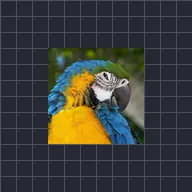

오프셋

레이어 이미지를 이동하고 레이어 경계에서 반대편으로 이어 붙입니다.
설정
| 설정 | 유형 | 범위 | 기본값 |
|---|---|---|---|
| 오프셋 | 점 (X, Y) | -5000 px~5000 px | 0 px, 0 px |
| 페더 | 숫자 | 0~1 | 0 |
| 레이어에 마스크 | 켜짐 또는 꺼짐 | – | 꺼짐 |

레이어 이미지를 이동하고 레이어 경계에서 반대편으로 이어 붙입니다.
| 설정 | 유형 | 범위 | 기본값 |
|---|---|---|---|
| 오프셋 | 점 (X, Y) | -5000 px~5000 px | 0 px, 0 px |
| 페더 | 숫자 | 0~1 | 0 |
| 레이어에 마스크 | 켜짐 또는 꺼짐 | – | 꺼짐 |